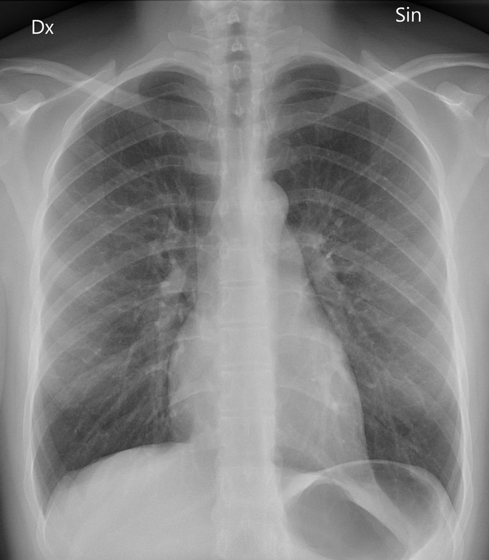
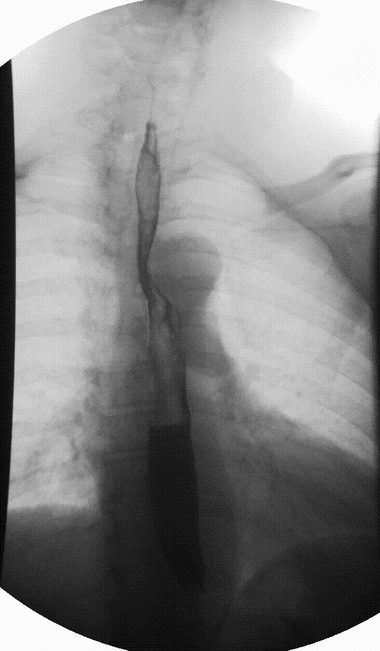

Swipe sideways to see all of it. Schematic, not to scale. Front view, cut in a coronal plane: the body's right is on your left, as in the 3D "Front" view.
Surface marking of the heart (borders, apex beat, valves): The Heart.
Swipe sideways to see all of it. Schematic. Each hilum seen from the mediastinal side, as in the 3D topics "Root of the right lung" (seen from the left: front on your left) and "Root of the left lung" (seen from the right: front on your right).

Swipe sideways to see all of it. Schematic, front view: the body's left is on your right, as in the 3D "Front" view.

Spotted a mistake, or something unclear? Report it: a short form on GitHub, with this page already filled in. No GitHub account? Sign up in a few seconds with your Google account. Signing in keeps out spam, and every report is checked against our sources, so your fix helps everyone. Reports are public: please don't include personal details.